일상 속에 조용히 스며드는 감각 조절 시스템
Soft Signals는 세상을 더 강하게, 더 섬세하게 느끼는 사람들을 위한 감각 조절 시스템이다. 예를 들어 Highly Sensitive People, 신경다양성 사용자, 또는 사회적 피로를 자주 경험하는 도시 생활자를 대상으로 한다.
이 프로젝트는 스트레스가 이미 커진 뒤에 대응하는 것이 아니라, 사용자가 작고 조용한 개입을 통해 스스로를 조절할 수 있도록 돕는 것을 목적으로 한다. 그 개입은 호흡, 촉각, 소리 필터링, 신체 인식을 통해 이루어지며 Soft Signals는 몸이 과부하에 도달하기 전에 먼저 보내는 작은 신호들에 주목한다. 다시 차분한 상태로 돌아올 수 있도록 부드럽게 도와준다.
즉, Soft Signals는 사회적 상황 속에서도 눈에 띄지 않게 작동하는, 실시간 다채널 감각 조절 시스템이다.
감각을 느끼지만,
그것을 조절할 방법을 모른다
HSP(Highly Sensitive Person)는 전 인구의 약 15~20%를 차지한다. 전 세계 80억 명 기준으로 약 12~16억 명에 해당하는 규모다. 이들은 disorder나 진단이 아니라 생물학적 특성(trait)을 가진 사람들이기 때문에, 기존 의료 기기가 아닌 웰빙·라이프스타일 테크 카테고리에서 접근해야 한다.
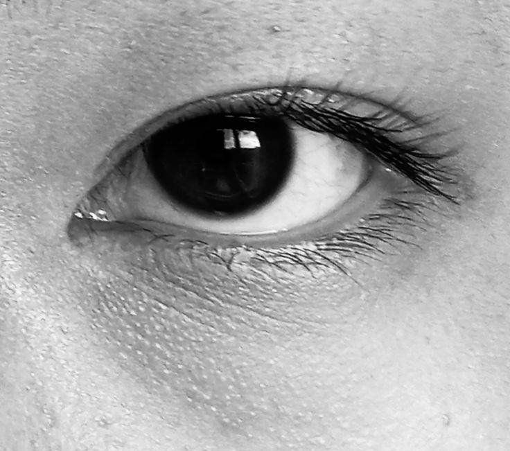
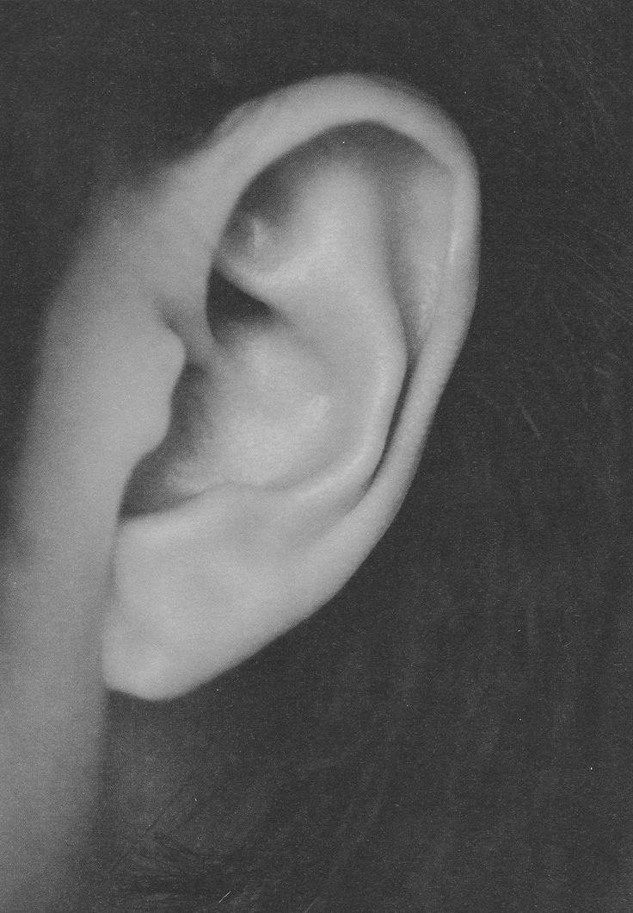
그러나… 여과되지 않은
감각의 세계
우리의 일상적인 사회적 공간은 HSP에게 끊임없는 감각 자극의 홍수다. 하루가 끝날 때, 타인의 표정·목소리·분위기가 과도하게 쌓여 인지 피로로 이어지지만, 그 원인을 명확히 인식하기 어렵다. "느끼는 것"은 있지만, 무엇을 어떻게 조절해야 할지 알 수 없다. 현재의 기술은 모든 사람을 동일하게 가정하며, 감각적으로 예민한 사람의 사회적 경험은 충분히 다루어지지 않는다.
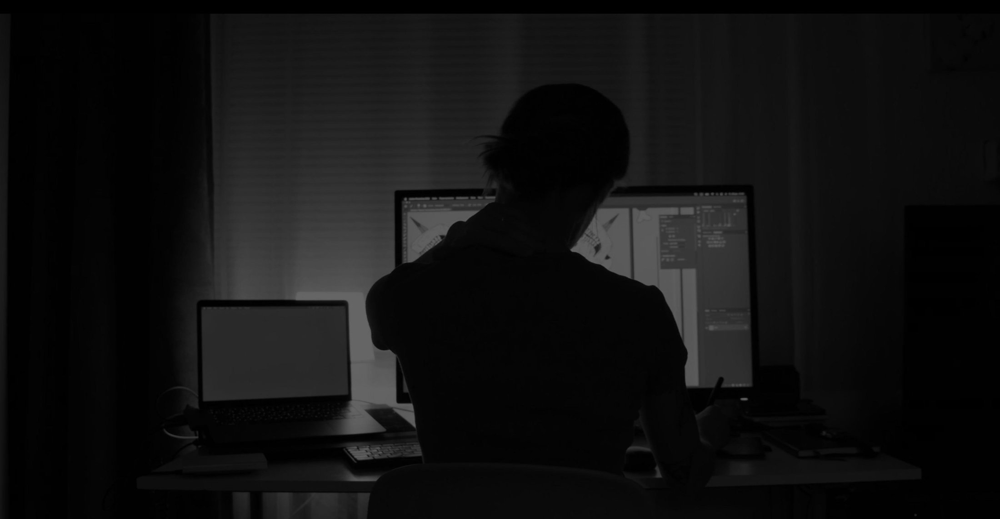
How might we give an HSP real-time sensory-regulation tools, usable in various ways, without being socially noticeable?
어떻게 하면 HSP가 사회적으로 티 나지 않으면서, 다양한 방식으로 실시간 감각 조절 도구를 사용할 수 있을까?
세 개의 조용한 오브젝트, 하나의 조절 루프
주감각기 · PRIMARY
Sensus Aura
흡입기 형태의 호흡 오브젝트. 유량 센서·그립 EDA·햅틱으로 각성 상태를 측정하고 온도로 응답한다.
보조기기 · SECONDARY
Arcus
이어 클립. 골전도를 통한 VNS 진동과 16dB 음향 필터 — 액세서리처럼 착용한다.
그라운딩 도구
Tactus
손바닥 크기의 심부 압박 자극 오브젝트 — 전자장치 없이 촉각만으로 작동한다.
예민함은 안에서 어떻게 보이는가
01
정보·감정을 더 깊이 처리한다
02
감각 과부하와 인지 피로에 취약하다
03
행동하기 전에 경험을 깊이 반추한다
04
사람이 많거나 소음·밝은 조명·급격한 변화에 압도된다
05
강한 감정 반응과 높은 공감 능력을 지닌다
06
향, 질감, 목소리 톤 등 남들이 놓치는 미세한 자극을 감지한다
HSP라고 생각하는 인터뷰이들이 이미 사용하는 대처 방식 (4명)
"특히 통제할 수 없는 환경에서 더욱 그러하다. 이러한 특성은 때때로 피로감과 일상 생활에서 집중 유지의 어려움과 같은 부정적인 경험으로 이어질 수 있다." — 인터뷰이 (여, 30대)
감각적 직관 → 데이터 측정 → 상태 해석 → 감각적 피드백 → 사용자 재반응
01
감각적 직관
그립감, 온도 변화, 텍스처, 압력 — 주관적인 첫 감지.
02
데이터 측정
EDA(피부전도), PPG(심박변이), 호흡 속도 — 객관적 임계값.
03
상태 해석
세션 로그, 전후 HRV, 패턴 인식 — 사용자별 트리거를 학습한다.
04
감각적 피드백
온화한 햅틱 펄스, 호흡 페이싱, 사운드 필터링, 심부 압박.
05
사용자 재반응
오브제를 다시 만지고, 호흡을 따라가며 — 루프는 티 나지 않게 다시 시작된다.
보이지 않으면서 능동적으로 조절하는 제품은 없다
현재의 웨어러블은 대부분 손목에서 조용히 모니터링만 한다. 조절 기기는 존재하지만 의료용이거나 장난감처럼 보인다. Soft Signals는 아무도 점유하지 않은 사분면에 위치한다 — 보이지 않으면서, 능동적으로 조절하는.
세 개의 입구, 하나의 시스템
Sensus Aura
호흡 오브젝트 · 손에 쥐는 형태
Tactus
그라운딩 오브젝트 · 손바닥 착용
Arcus
이어 클립 · 신체 착용
Sensus Aura
주감각기 · 호흡 오브젝트
천식 흡입기와 폐활량 측정기에서 영감을 받은 손 안착형 감각 조절 오브젝트다. 마우스피스의 소재 저항이 자연스럽게 호흡을 늦추고 깊게 만들어, 부교감신경계를 활성화한다.
전체 설명 보기
하드웨어 — 분해도
- 볼 인디케이터호흡 깊이 표시
- 어퍼 퍼널마우스피스 통로
- 어퍼 챔버
- 세퍼레이션 링
- 기압 · 온도 센서
- 메인 PCB
- 온도 발생기Peltier TEC
- 무선 충전 모듈
- 세퍼레이션 링 + EDA 센서
- 하우징
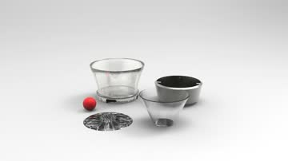
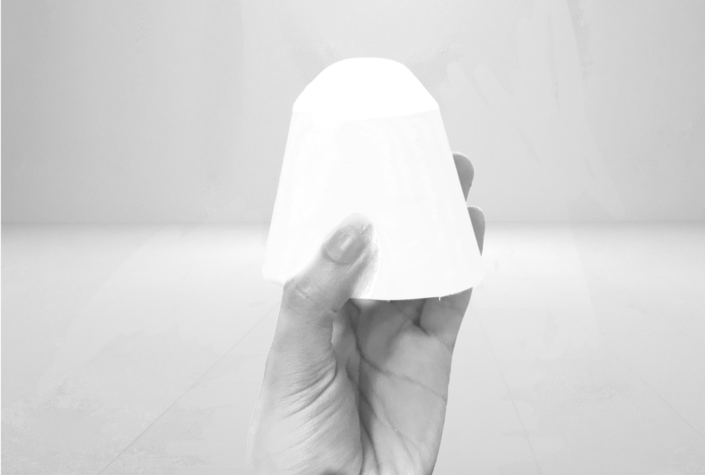
프로토타이핑 과정
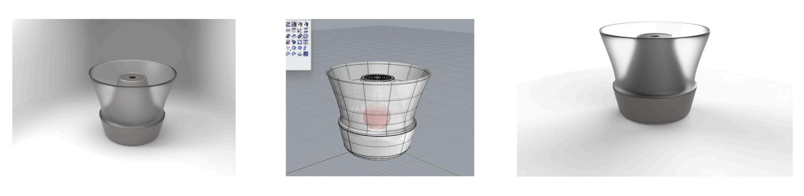
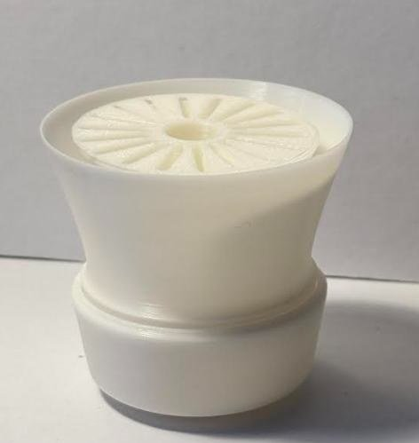
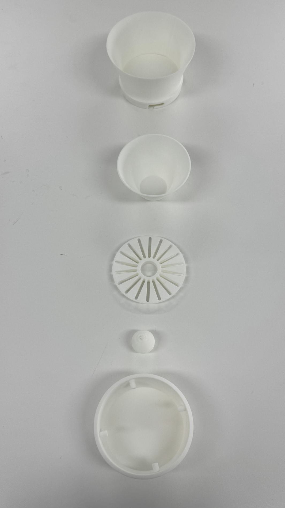
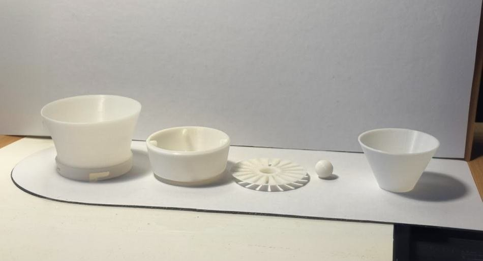

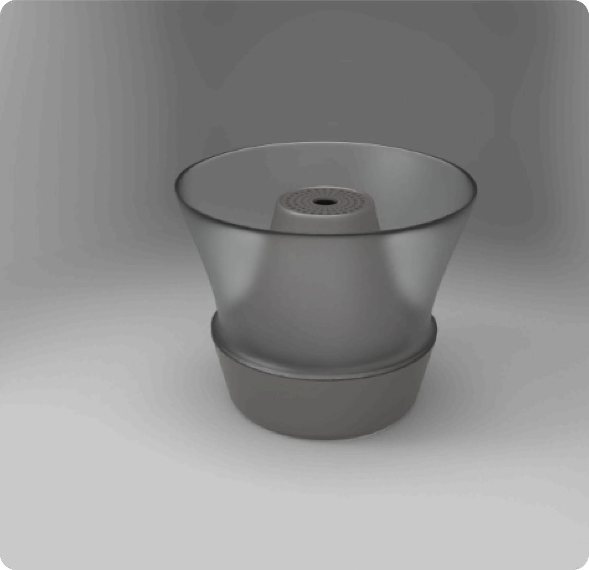
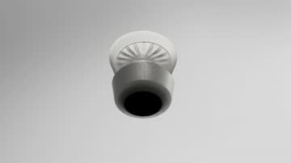
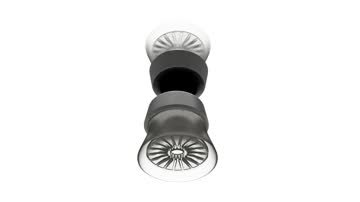
Arcus
보조기기 · 이어 클립
이주(tragus)에 클립으로 고정되는 신체 착용형 조절 디바이스. 의료기기가 아닌 비정형 귀걸이로 읽혀, 사회적 맥락 속에서 조절이 드러나지 않는다.
전체 설명 보기
메커니즘 & 제작 방식
VNS 주파수: 15 / 25Hz, 이주를 통한 골전도 전달. 음향 필터: −16dB SNR.
주얼리 캐스팅 방식으로 제작 — 왁스로 3D 프린팅 후 실버로 주물, 광택기로 마감.
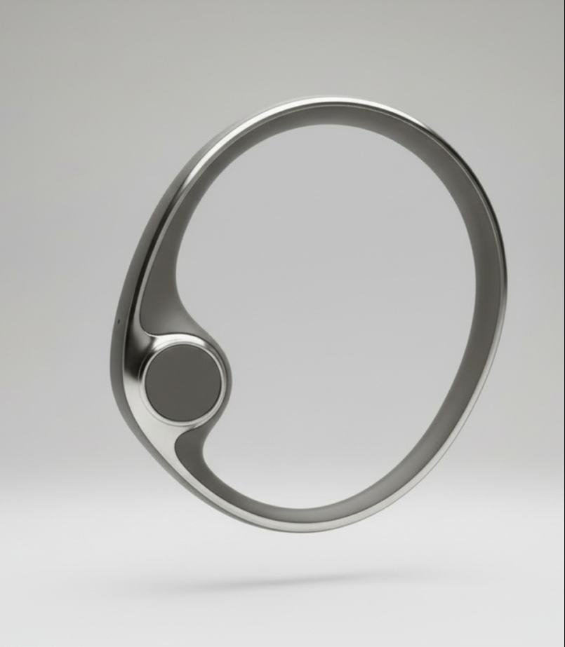
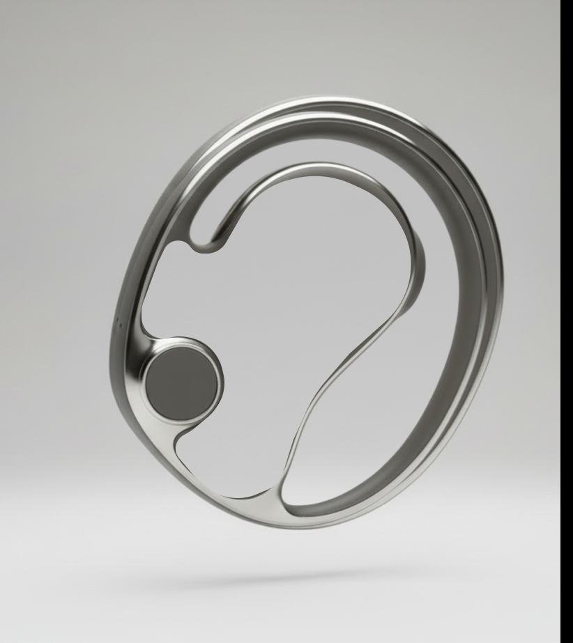
Tactus
그라운딩 도구 · 비전자식
심부 압박 자극(Deep Pressure Stimulation) 원리만으로 설계된 손 안착형 그라운딩 오브젝트다. 전자 부품도, 별도의 활성화 동작도 없다 — 오직 촉각만으로 작동한다.
전체 설명 보기
고려된 헤드 타입
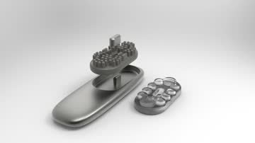
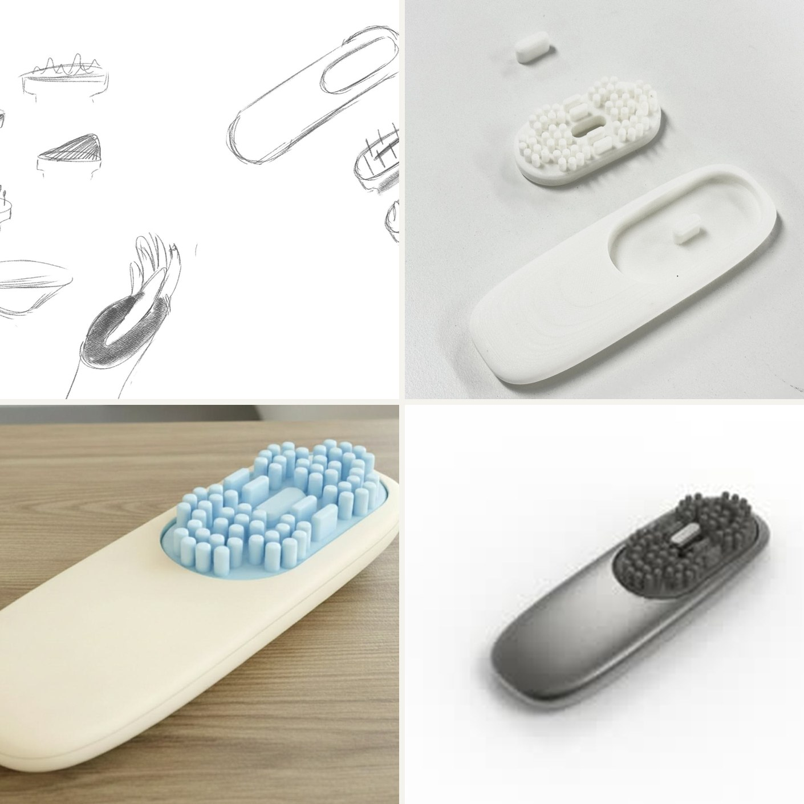
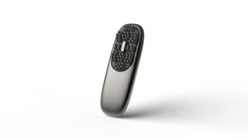
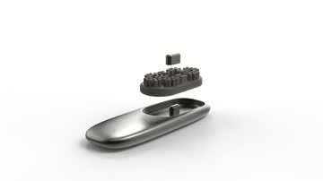
세 개의 조용한 오브젝트를 위한 조용한 부스
동선 계획
프로토타이핑 · 아이디에이션 아카이브
프로토타입과 완성품을 나란히
경험존
받침대 위 오브젝트 체험, iMac으로 제품 영상 재생
Sensus Aura
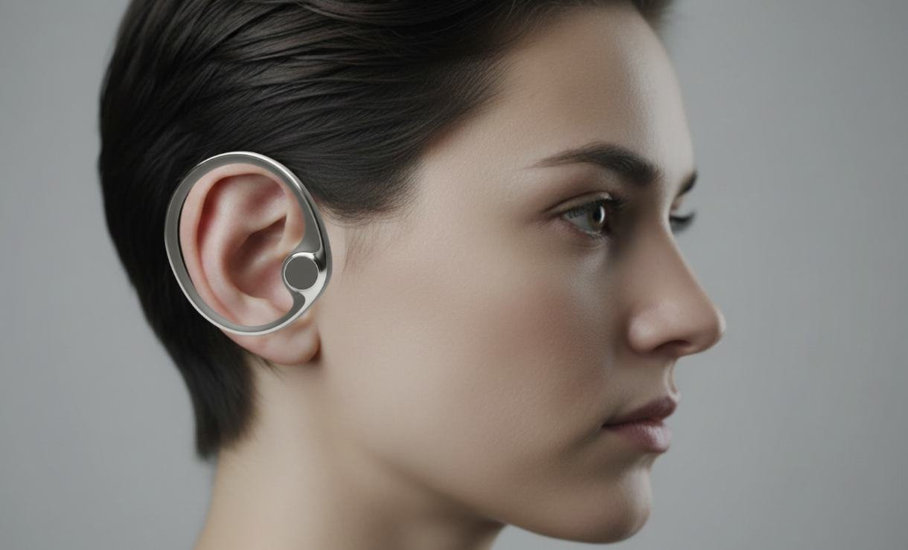
드래그하거나 스크롤해서 둘러보기 — 가운데 이미지를 탭하면 확대
Bianca
Braga
Diploma Project Designer
눌러서 뒤집기졸업작품
- 제품·산업 디자인
- UX 리서치 · 유저 인터뷰
- 프로토타이핑 · CMF
- 전시 디자인
읽어주셔서 감사합니다.